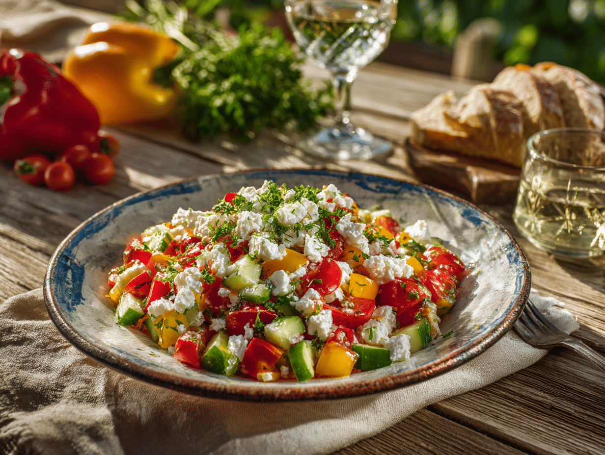
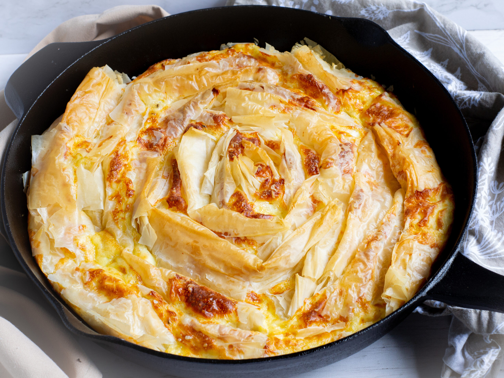
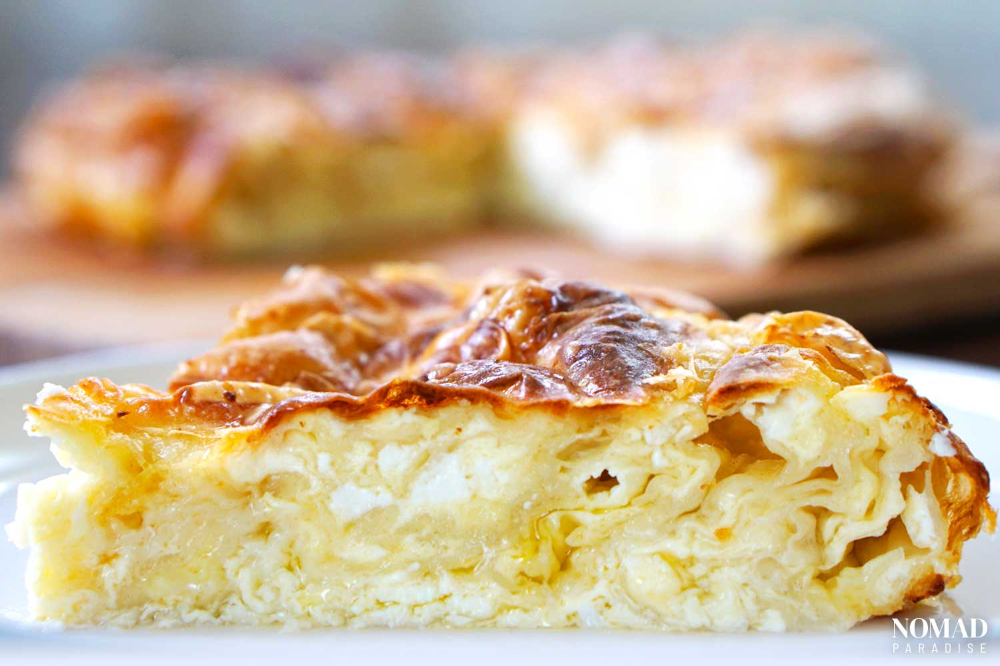
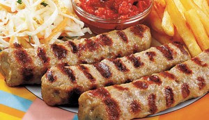
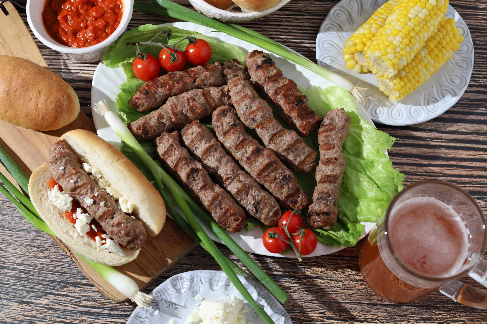
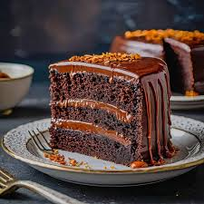
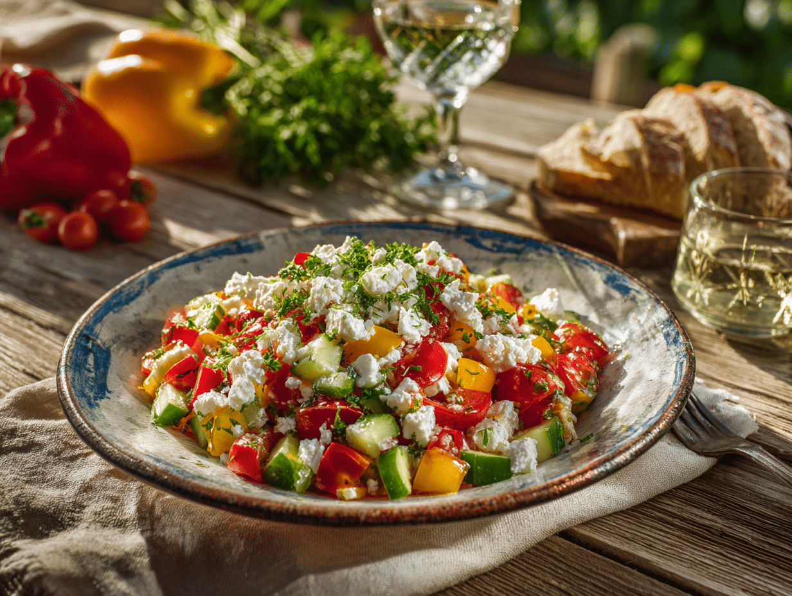
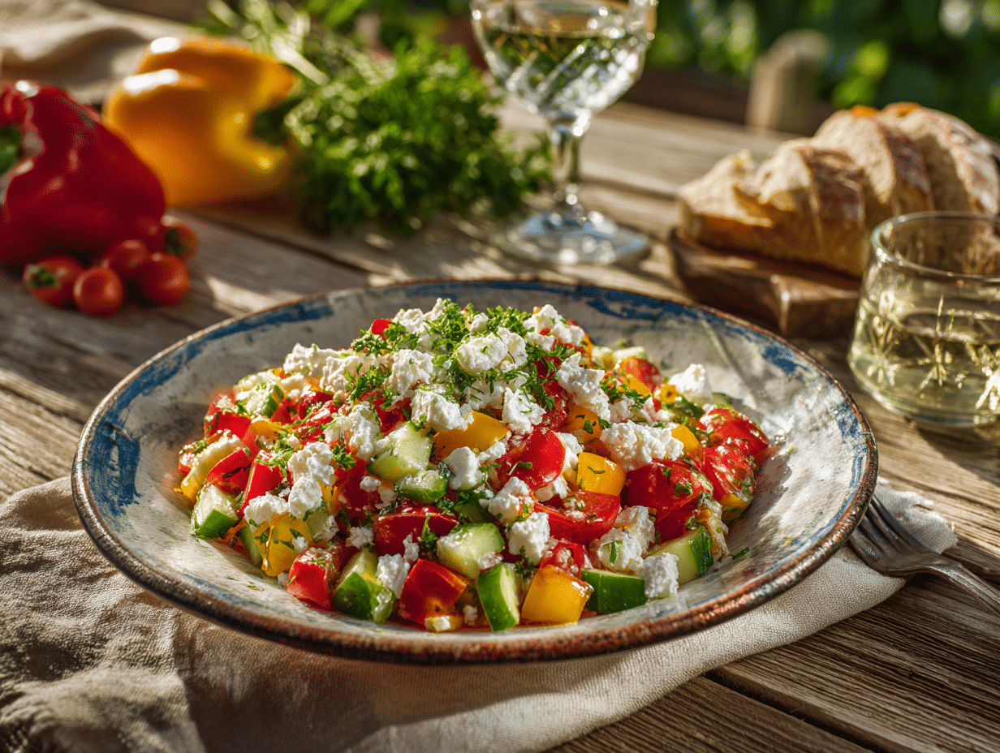
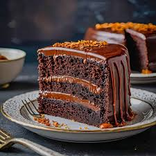
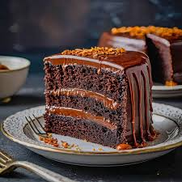

Kavarma isn’t just a stew — it’s a warm embrace of Balkan tradition. Tender pieces of meat simmer slowly with onions, peppers,
tomatoes, and aromatic herbs, filling the air with a rich, comforting aroma. Served straight from the pot, it’s a dish meant to be
shared, bringing friends and family together over hearty bites. Each spoonful tells a story of rustic kitchens, local ingredients,
and generations of care — a true taste of the Balkans that warms both body and soul.
Shopska salad

Shopska Salad isn’t just a salad — it’s a colorful celebration of Balkan freshness. Juicy tomatoes, crisp cucumbers, sweet peppers,
and onions come together under a generous sprinkle of tangy feta and a drizzle of golden olive oil. Simple yet vibrant, it’s a dish
meant to be shared, enjoyed slowly, and savored with friends and family. Every bite captures the spirit of local markets, sun-soaked
gardens, and the timeless joy of gathering around the table — a true taste of the Balkans.
Banitsa


Banitsa isn’t just a pastry — it’s a taste of Balkan tradition. Golden, flaky layers filled with cheese, spinach, or pumpkin, warm and
fragrant from the oven. Shared at family breakfasts or festive gatherings, each bite tells a story of local kitchens and generations
of care. Simple, authentic, and comforting, banitsa is pure Balkan craftsmanship. A warm slice is more than food — it’s a moment, a
tradition, an experience.
Tarator
Tarator isn’t just a cold soup — it’s a refreshing taste of the Balkans. Creamy yogurt, crisp cucumbers, garlic, and fresh dill come
together with a drizzle of olive oil and a sprinkle of walnuts, creating a cool, vibrant dish perfect for warm days. Light, soothing,
and full of flavor, it’s a staple of summer tables, offering a simple yet unforgettable experience of Balkan freshness. Every spoonful
is a gentle invitation to slow down, savor the moment, and taste the traditions of the region.
Kebapche


Kebapche isn’t just grilled meat — it’s a bite of Balkan street food tradition. Juicy, seasoned minced meat, shaped into perfect
cylinders and grilled to a smoky, golden perfection, served hot with a side of fresh bread or salad. Simple, flavorful, and utterly
satisfying, it’s a dish made for sharing with friends, enjoying outdoors, and tasting the authentic spirit of the region. Every bite
carries the aroma of local spices, the warmth of casual gatherings, and the timeless joy of Balkan flavors.
Garash torta

Garaš Cake isn’t just a dessert — it’s a decadent taste of Bulgarian tradition.
Layers of rich, dark chocolate sponge meet velvety chocolate cream, crowned with a glossy ganache that melts in your mouth. Elegant yet comforting,
it’s a treat meant to be savored slowly, often shared with friends over coffee or special celebrations. Every bite tells a story of careful
craftsmanship, local ingredients, and the timeless love for chocolate — a sweet experience that lingers long after the last slice.

 



 
